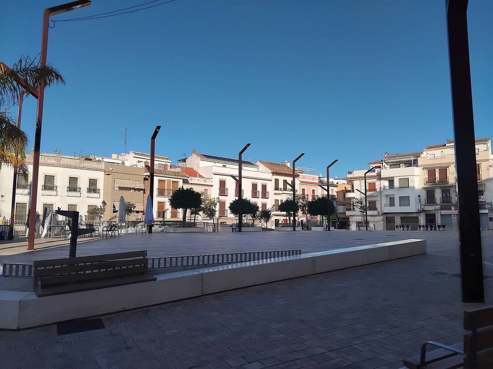
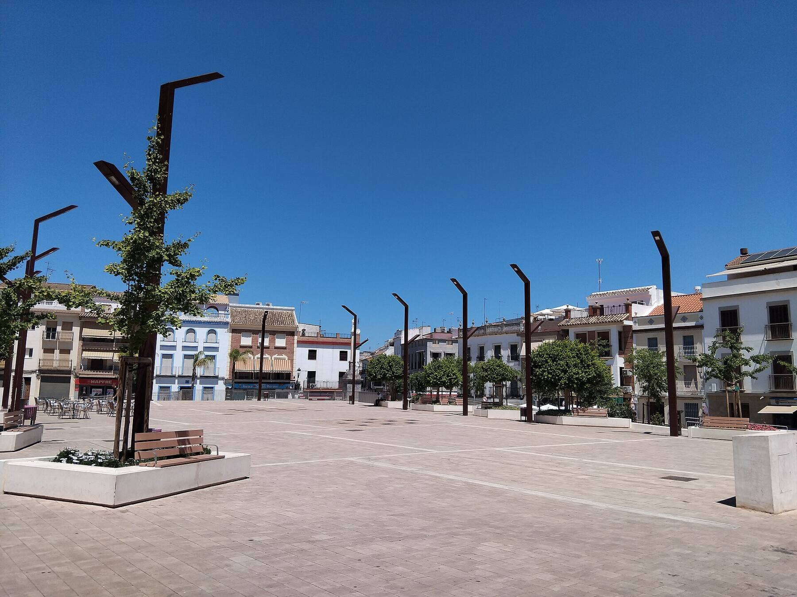
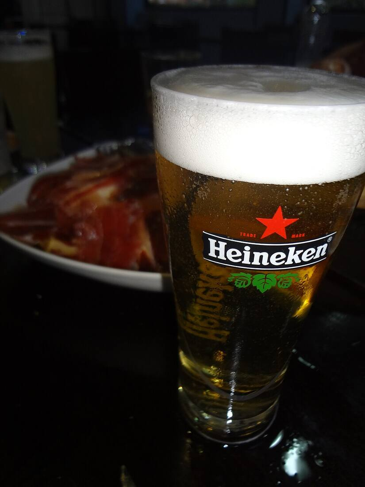
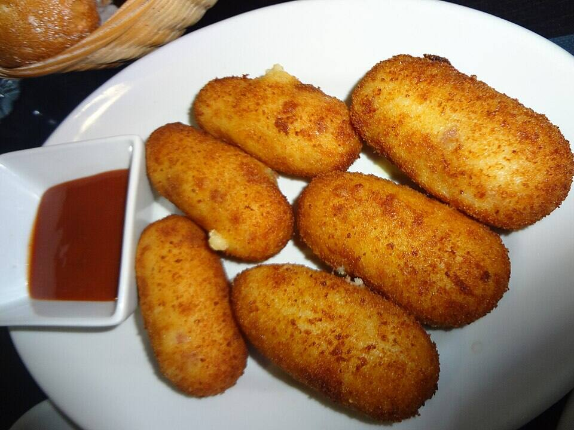
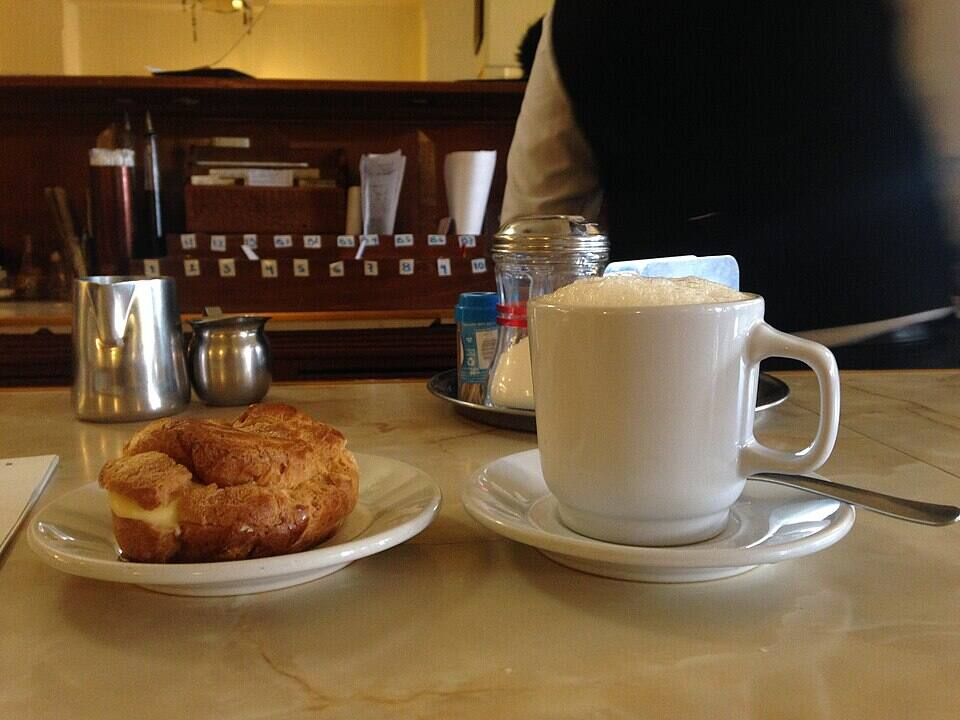
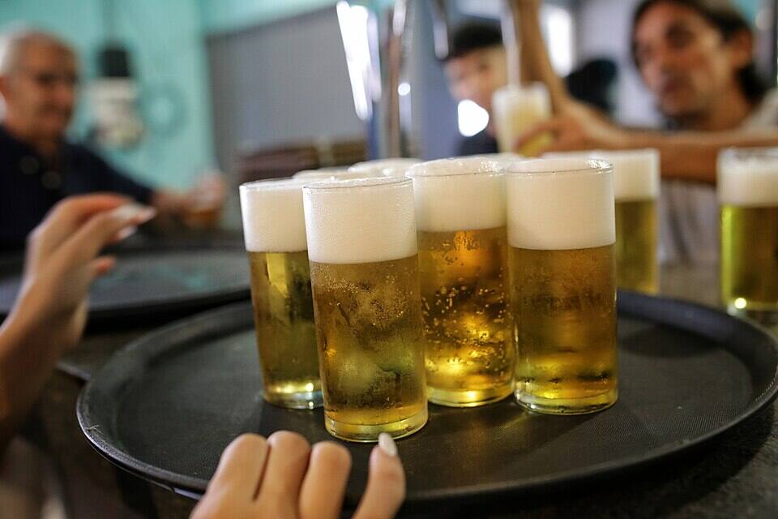
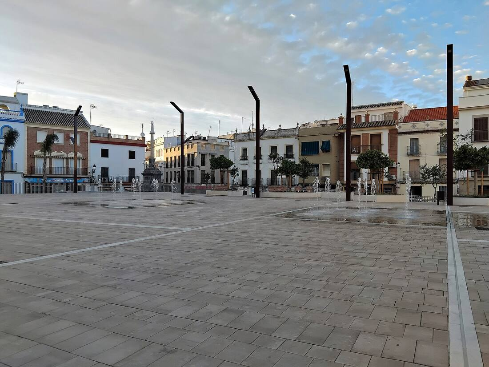
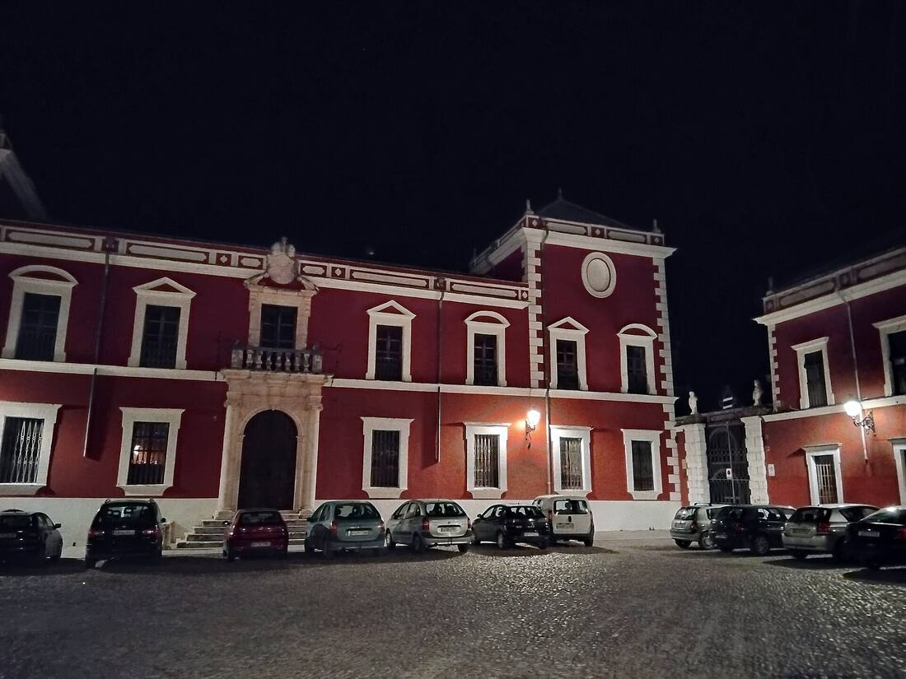
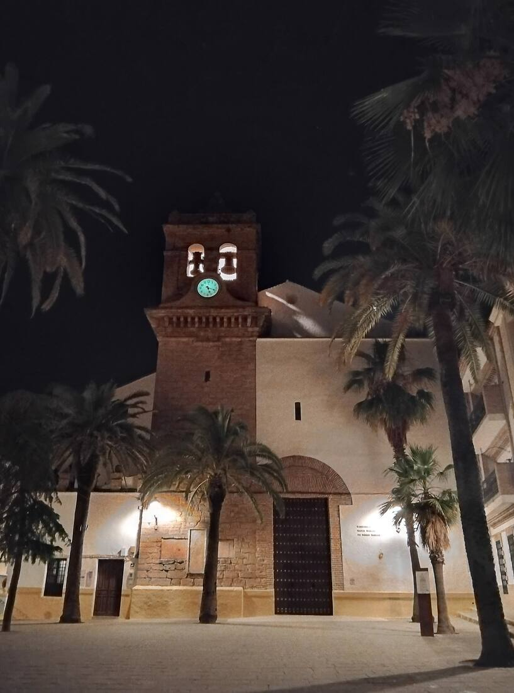

La terraza
Al sol en invierno y a la fresquita en verano, mirando al paseo.

Cañas bien frías, raciones caseras y bocadillos en plena plaza del pueblo. Siéntate en la terraza o llévatelo a casa.
Desde el primer café de la mañana hasta la última caña de la noche. Cocina de aquí, precios de aquí y la mejor vista de Fernán Núñez.

Al sol en invierno y a la fresquita en verano, mirando al paseo.

Como tiene que ser.

Flamenquín, croquetas, rabo de toro…

Café y tostada para empezar el día.

Siempre con buen ambiente.
La plaza grande de Fernán Núñez, junto a la iglesia de Santa Marina. Un sitio para quedar, ver pasar a la gente y dejar que los niños corran mientras tú te tomas algo.
Cómo llegar


Las noches de verano en el paseo no se cuentan, se viven. Reserva tu mesa llamando al bar.
Llamar al 624 748 836Raciones desde 8 €, bocadillos desde 4 €.
Ver la carta